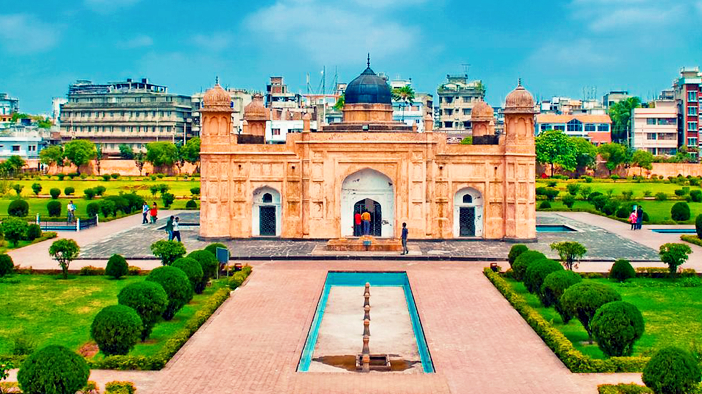
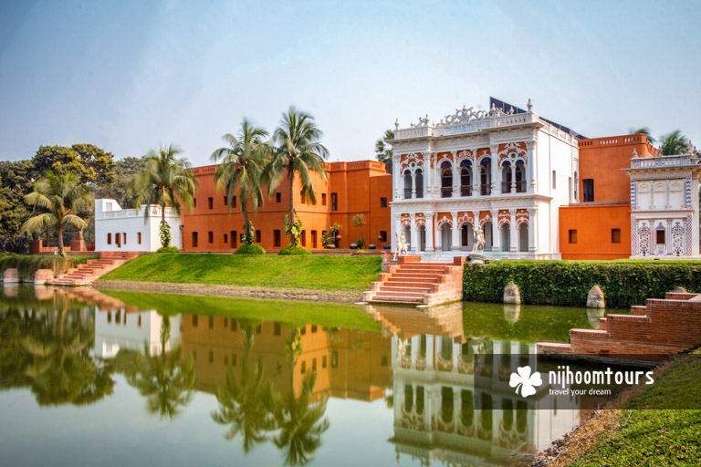
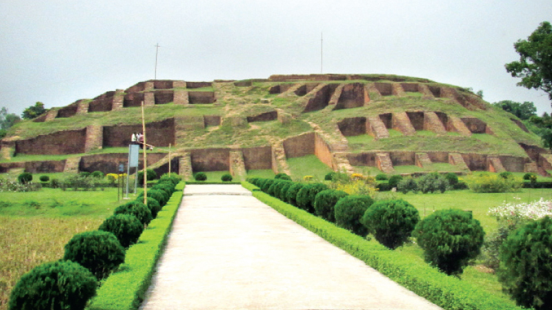

Home Page
Welcome to History
A place from where you will found yourself a explorer of History
Ahasan Manjil
An ancient creature of Mughal

In Mughal era, there was a garden house of Sheikh Enayet Ullah , the landlord of Jamalpur Porgona (district), in this place. Sheikh Enayet Ullah was a very charming person, who acquired a very big area in Kumartoli (Kumartuli) and included it in his garden house. Here he built a beautiful palace and named it "Rongmohol" (Rangmahal) .
After some renovation work, the trading house became the residence of Khwaja Alimullah. In his time, a stable and a family mosque was added in the compound. After his death, his son Nawab Bahadur Sir Khwaja Abdul Ghani made a great flourish to the property, and named it "Ahsan Manzil" after his son Khwaja Ahsanullah
Ahsan Manzil is one of the most significant architectural monuments of Bangladesh. The building structure was established on a raised platform of 1 meter, the two-storied palace measures 125.4m by 28.75m. The height of the ground floor is 5 meters and the height of the first floor is 5.8 meters. The thickness of the walls of the palace is about 0.78 meters. There are porticos of 5 meters height on the northern and southern sides of the palace. The building has a broad front-facing the Buriganga River.
There are attractive wooden stairs in the room that is attached to the north of the domed room. The balusters were ornamented with vine leaves made of iron along the railing of the stairs. The wooden ceiling of the room, decorated with geometric designs, is very elegant. The verandas and rooms are covered with marble. The doorways are placed within semicircular arches. The inner doors had multi-colored glasses. Wooden beams supported the roof of these rooms. The architecture and the decoration is one of a kind in whole Bangladesh.
Lalbagh Fort
An ancient creature of Mughal

Shaista Khan was the new subahdar of Dhaka in that time, and he did not complete the fort. In 1684, the daughter of Shaista Khan named Iran Dukht Pari Bibi died there. After her death, he started to think the fort as unlucky, and left the structure incomplete. Among the three major parts of Lalbagh Fort, one is the tomb of Bibi Pari.
After Shaista Khan left Dhaka, it lost its popularity. The main cause was that the capital was moved from Dhaka to Murshidabad. After the end of the royal Mughal period, the fort became abandoned. In 1844, the area acquired its name as Lalbagh replacing Aurangabad, and the fort became Lalbagh Fort.
There are some significant structures. Such as:
- Diwan E Alam
- A Water tank
- Tomb of Bibi Pari
- Lalbagh Fort mosque
The Liberation War Museum
The Creature holding the history of Liberation War

The Liberation War Museum began under the initiative of an eight-person board of trustees as a means of preserving the memory of the 1971 Liberation War.
The trustees sought donations from the general public to fund the museum and for the general public to come forward with artifacts to be displayed artifacts from the war, including personal belongings, weapons and human remains, as well as creating an archive of documents and personal histories related to the war.
Over the years the museum collected more than 21,000 artifacts (as of 2016), with some as exhibits on display in the museum and many more stored in its archives. The museum describes itself as "the outcome of a citizens' effort" due to the crowd-funded nature of the museum (which is independent of the Govt. of Bangladesh) and the collective contribution of the general public to the museum's collection.
Sonargaon Museum
An ancient creature of Sultanate

Sonargaon is one of the old capitals of the historic region of Bengal and was an administrative center of eastern Bengal.
It was also a river port. It's hinterland was the center of the muslin trade in Bengal, with a large population of weavers and artisans.
According to ancient Greek and Roman accounts, an emporium was located in this hinterland, which archaeologists have identified with the Wari-Bateshwar ruins. The area was a base for the Vanga, Samatata, Sena, and Deva dynasties.
Sonargaon gained importance during the Delhi Sultanate. It was the capital of the sultanate ruled by Fakhruddin Mubarak Shah and his son Ikhtiyaruddin Ghazi Shah. It hosted a royal court and mint of the Bengal Sultanate and also the Capital of the Bengal Sultanate under the reign of Ghiyasuddin Azam Shah.
Sonargaon became one of the most important townships in Bengal. Many immigrants settled in the area. The Sultans built mosques and tombs. It was later the seat of the Baro-Bhuyan confederacy that resisted Mughal expansion under the leadership of Isa Khan and his son Musa Khan.
Sonargaon then became a district of Mughal Bengal. During British colonial rule, merchants built many Indo-Saracenic townhouses in the Panam neighborhood. Its importance was eventually eclipsed by the nearby Port of Narayanganj which was set up in 1862.
Mahasthangarh
The first and oldest captal of Bangla

Mahasthangarh (Pundranagar), the ancient capital of Pundravardhana is located 11 km (6.8 mi) north of Bogra on the Bogra-Rangpur highway, with a feeder road (running along the eastern side of the ramparts of the citadel for 1.5 km) leading to Jahajghata and site museum.
Several personalities contributed to the discovery and identification of the ruins at Mahasthangarh. Francis Buchanan Hamilton was the first to locate and visit Mahasthangarh in 1808, C.J.O'Donnell, E.V.Westmacott, and Beveridge followed. Alexander Cunningham was the first to identify the place as the capital of Pundravardhana. He visited the site in 1879.
At present there are several mounds and structural vestiges inside the fortifications. Of these a few of note are:
- Jiat Kundo
- Mankalir Dhap
- Porsuramer Basgriha
- Bairagir Vita
- Khodar Pahar Vita
- Munir Ghon